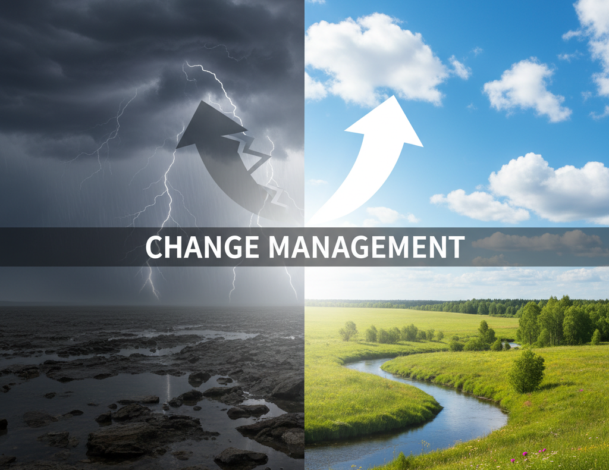

Digital Transformation Starts with the Change Agent Transformation#

The Starting Point: A Conscience of Inefficiency#
Every digital transformation begins with a catalyst.
Most often, this catalyst is the realization at a management or strategic level that a core problem exists—typically, a glaring inefficiency. Processes are slow, data is siloed, costs are too high, or competitors are moving faster.
This realization, however, is often not shared by the very organization targeted for the transformation. For the members of that organization, the system is not an "inefficiency" to be solved; it is simply "the job." They may acknowledge that their processes are complicated or cumbersome, but they are the ones who make it work.
This initial disconnect between the strategic problem and the operational reality is the first fault line in the transformation landscape.
Transforming Something That Works Badly—But Works#
Digital transformation is not a rescue mission for a failing company; it is an optimization strategy for a solvent one. Transformations cost money, which means the company must be functional enough to finance them.
This leads to the central paradox of change: you are tasked with fundamentally altering a system that, despite its flaws, successfully gets the job done. However inefficient, the organization delivers its product, services its clients, and generates revenue.
This fact introduces an enormous risk. A poorly managed transformation doesn't just fail to optimize; it can break what is already working, jeopardizing the very revenue streams that fund the project. This explains why all transformation, even with the best intentions, is inherently high-risk and fraught with tension.
Why Organization Self-Transformation is (Almost) Impossible#
Given the high risks of external intervention, one might ask why the organization doesn't simply transform itself. The answer lies in a combination of skills and fear.
Most members of an organization are experts in executing processes, not in designing or re-engineering them. The skillset that makes one a good accountant, logistics coordinator, or customer service rep is not the same skillset required to architect a new, system-wide workflow.
Furthermore, even in a transformation where leadership explicitly promises that no one will be fired, fear remains a powerful inhibitor. Optimization is easily interpreted as "doing more with less," which creates anxiety. This fear isn't just of being laid off, but of becoming irrelevant, of failing to learn the new tools, or of losing the status that comes with being an expert in the old system.
Lacking the specific skills for change and motivated by a natural fear of the unknown, the organization will instinctively resist. Therefore, the impulse and direction for change must, almost always, come from the outside.
Resistance as the Standard Behavior#
When an external change agent arrives, they are not met with open arms. They are met with resistance.
This resistance is often misunderstood by management as stubbornness or disloyalty, but it is far more logical. The members of the targeted organization are, in fact, masters of their domain. They are experts in the inefficient processes. They know all the workarounds, the unwritten rules, and the "shadow" systems that truly make the company run. This hard-won, niche expertise is their primary source of value and professional security.
From their perspective, the change agent is a threat who does not understand their world and seeks to dismantle the very system they have mastered. This expertise, however unusable it may be outside the organization, provides the team with powerful leverage. They know the secrets the change agent does not, and this information asymmetry becomes their primary line of defense.
The Change Agent Who Fails to Adapt#
The change agent, typically an external consultant or a new hire from a different corporate culture, arrives with a mandate for action. They bring their own toolkit, methodologies, and transformation patterns—perhaps a "certified" Agile framework, a Six Sigma playbook, or experience from a previous, "successful" project. They are hired to provide answers, and they are often eager to apply them.
The critical error is when they prioritize their patterns over the people. They enter with a diagnosis before fully understanding the symptoms. They conduct a few high-level workshops and then present a solution that, while perhaps technically elegant, feels alien to the team on the ground. The more rigidly they try to impose these external patterns, the more they validate the team's fears, and the greater the resistance becomes. They are seen as arrogant, naive, and disconnected from the "real work."
The "Listen and Learn" Pivot#
This is the make-or-break moment for the entire project. The change agent must, at some point, stop talking and start listening. They must become experts in the very content they are there to change. They must acquire a deep, empathetic knowledge of the dysfunctional landscape and, most importantly, why it came to be that way. This is the "listen and learn" phase, and it is not a passive activity.
In this phase, the change agent must demonstrate profound modesty in the face of a dysfunctional organization that, against all odds, still gets the job done. They must ask questions: "Why is this step done this way?" "What breaks if we remove this?" "Who does this report really go to?" In seeking these answers, a funny thing happens: the change agent changes itself. Their certitude is replaced by curiosity. Their generic patterns are shelved in favor of specific, local knowledge.
Experience as an Adaptive Tool#
Once the change agents have passed through this gauntlet of learning, they can finally begin to add value. When they can "talk the local language" and demonstrate a genuine understanding of the local traditions and challenges, they earn the right to suggest changes. Now, their external experience becomes a powerful asset. They can get inspired by their transformation patterns but are cautious about applying them wholesale. Instead, they adapt them. They can say, "I see your specific problem here. In another context, we used a tool that did X. What if we modified that tool to do Y for your specific need?" By blending their broad experience with this hard-won local specificity, they stop being an external force and start being a collaborative partner.
Conclusion#
In any complex digital transformation, the technology is rarely the hardest part. The true challenge is human. The organization to be transformed is not a broken machine; it is a living system of people who have, through their own ingenuity, made a difficult process work. If a change agent arrives with absolute certitude, pre-packaged patterns, and a rigid diagnosis, they will fail. They must never forget that, however inefficient or chaotic, the existing organization gets the job done.
The transformation, therefore, does not begin with the organization: The transformation begins with the change agent. They must be the first to change, trading their playbook for empathy, their authority for curiosity, and their solutions for questions. Only by transforming themselves into a trusted, knowledgeable partner, can they earn the right to transform the organization.
(October 29 2025)